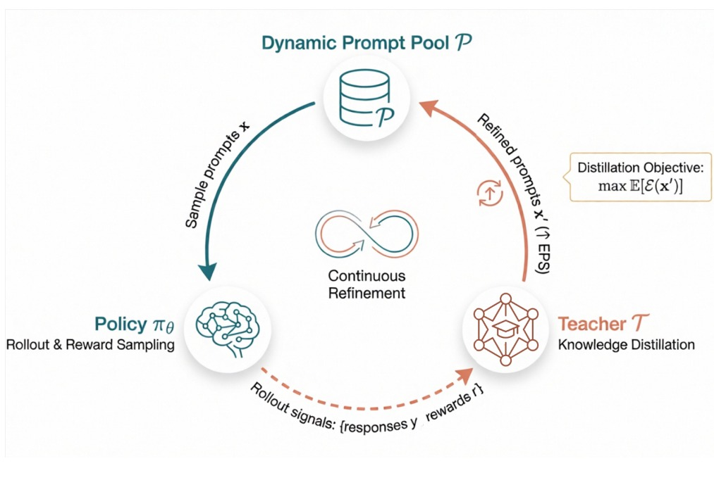

Yuanhao Yue (岳元浩)
I received my master's degree at School of Computer Science, Fudan University in 2025. Prior to that, I received my bachelor's degree at School of Computer Science and Engineering, Southeast University in 2022. I was also a visiting student at the Text Intelligence Lab, Westlake University in 2023 and an exchange student at the College of Electrical Engineering and Computer Science, National Taiwan University in 2019.
I ended my career at Tongyi Lab and Alibaba PAI in July 2026 and had a wonderful time there. I am no longer affiliated with the team.
My research focuses on Post-training for LLMs, centered on three directions: Agentic RL, SFT, and Evaluations.
I'm always open to new opportunities or collaborations! Reach me at yhyue22@m.fudan.edu.cn.
📚 Research
Selected publications, grouped by research direction. (* indicates equal contribution)
Reinforcement learning for LLMs and agents — RLHF / preference optimization, tool use, multi-turn reasoning, and long-horizon task completion.
Supervised fine-tuning and knowledge distillation — data synthesis, curriculum design, and industrial practices for training lightweight LLMs.
Benchmarks and analysis for LLM capabilities — factuality, open-domain QA evaluation, and graduate-level knowledge assessment.
🛠 Projects
QwenLM/Qwen3
★ 27.7k
Qwen3 is the large language model series developed by Qwen team, Alibaba Cloud.
alibaba/EasyNLP
★ 2.2k
EasyNLP: A Comprehensive and Easy-to-use NLP Toolkit
modelscope/easydistill
★ 482
A toolkit on knowledge distillation for large language models
💼 Experience
Algorithm Engineer @ Tongyi Lab & Alibaba PAI
Research Intern @ Alibaba PAI
Visiting Student @ NLP Lab, Westlake University
Visiting Student @ KSE Lab, Southeast University
🤝 Academic Service
- Oral Presentation @ COLING 2025 [Slides]
- Reviewer: ACL, EMNLP, NeurIPS
🏆 Selected Awards
- Outstanding Graduate of Fudan University 2025
- Honorable Mention, The Mathematical Contest in Modeling 2021
- Outstanding Debater in the School's Debate Competition 2018–2022
- Top 5% in AMC 12 2017